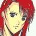
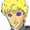
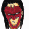
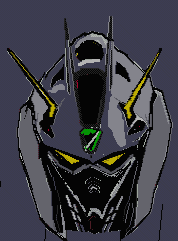
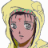
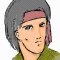
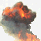
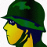

ナレーション 「独立自治権を勝ち取った宇宙移民者群セツルメントは、ようやく得た平和の中に麻痺し、やがては特権主義社会を生み出し、結局は自らが小セツルメントへの圧政を強いるようになる。時に宇宙世紀２５５年。各地で起きたセツルメント内紛争は、体制側と、反体制側に別れてその共同戦線を張り、セツルメント間による強大な戦禍を巻き起こしつつあった」
タイトル
「Ｇの再来」 − Ｔｈｅ Ｒｅｔｕｒｎ ｏｆ Ｇ −
セツルメントがアップになり、そこへ着陸するオデッセイア。
廊下。
遊ぶユーニス。
一緒にいるアベル。
廊下から、キャロライン。ＡＪの部屋に入る。
視線で追う二人。
ＡＪの部屋
キャロラインの声 「失礼いたします」
ＡＪ 「どうぞ」
キャロライン 「破棄された１３番宇宙港への停船が完了しました」
ＡＪ 「ご苦労」
キャロライン 「念の為にカモフラージュを掛けておきますか？」
ＡＪ 「いや、セグメントの連中はここまでは入りこんでこないだろう。運悪く発見されるとしても、エクレシア側だ。大きな問題はない」
キャロライン 「では」
ＡＪ 「セグメント側がゲリラ・・・エクレシア一掃のための作戦を展開するという情報を得ている。今回の任務は、それを阻止する事を最優先とする」
キャロライン 「了解しました」
ＡＪ 「今の所、連中に動きはないようだが・・・」
キャロライン 「作戦中ですわ」
ＡＪ 「かまわんさ」
ドック

イヴリン 「ユニ、ここはうろついちゃ駄目だよ」ユーニス 「ごめんなさぁい」
アベル 「すみません、イヴリンさん」
イヴリン 「可愛い妹ね」
アベル 「正しくは妹じゃないんですけどね。僕と同じで、戦災孤児だったのを、ＡＪに拾われたんです」
イヴリン 「・・・そう」
アベル 「ところでイヴリンさんは、ゲリラって知ってます？」
イヴリン 「バルバロイの事ね。誰が言ってたの？」
アベル 「ＡＪ・・・、ダグラス長官が、エクレシアの事をゲリラって・・・」
イヴリン 「ゲリラってのは、小人数での奇襲戦法の事よ。平たく言えば、非正規軍の事を指すんだけど・・・。今じゃ差別用語らしいから、一応使っちゃ駄目らしいわ。あたしは、バルバロイの方が差別的だとは思うけどね」
アベル 「なんでです？」
イヴリン 「バルバロイは、【通じない言葉を話す人】って意味だからよ」
アベル 「・・・僕たちも、敵からしたら、そのバルバロイに当たるんですよね」
イヴリン 「私たちからすれば、セグメントの連中もバルバロイだわ」
アベル 「・・・だから、戦争が起きるんですね・・・」
イヴリン 「アベル、私たちグレイゾンは、私設軍隊よ。苦しめられてる人を助けるために作られてるの」
アベル 「わかってます。すみません、変な事聞いて」
ジーン 「あんまりボウズに難しい事教えるなよな」
イヴリン 「あら、難しい事じゃないわ。戦争には必要なのよ。自分が正しい事をしてるって確証が。特にアベルみたいな子供にはね」
セグメント・フォース司令部。司令室。

ルクレール 「こちらが長官室になります、シャイロン・チェイ一佐。本日より私が副官をつとめさせて頂きます、ルクレール・ミロ、階級は二佐であります」

シャイロン 「そう堅くなるな。君と私は同じリカード派閥だ。取って食いはしない」ルクレール 「前任のマルタン一佐はパーノッド派でした。・・・着任目的は、パーノッド派の一掃ですか？」
シャイロン 「リストの分別は進んでいるようだな、ミロ副官。私は働き者が好きだよ。くれぐれも、デュバルやカザニスには気取られんでくれよ」
ルクレール 「は。承知しております」
シャイロン 「・・・それと、着任早々、警備艦が沈められたとの報告を受けたが、警備の連中は居眠りでもしていたのか？」
ルクレール 「いえ、記録によると対応は早かった様子で、Ｍマシンで迎撃、交戦したのですが・・・」
シャイロン 「オートマターのバーガンディーが六機やられた？」
ルクレール 「はっ、敵は・・・Ｍマシン・・・一機だったそうです」
シャイロン （・・・ふん、ケネス。ようやく餌に食いついたか）
シャイロン 「一機に・・・、バルバロイどもに援軍来たれり、か。警備隊に伝えとけ。新兵の給料とオートマターのマシンの値段を天秤にかけてみろとな。全く、そろばんを弾く身にもなって欲しいものだな」
ルクレール 「兵士の弔慰金も、馬鹿にならないと思いますが」
シャイロン 「１０人死んでも釣銭の方が多いな。それで、相手側は？」
ルクレール 「は。・・・敵艦は中型艦、未確認船体。所属も不明です。コースから割りだすと、１３番ブロックへと潜んでいるものと思われますが」
シャイロン 「間違いなくいるよ。バルバロイに味方するつもりなのだからな」
ルクレール 「では、部隊を派遣しますか？」
シャイロン 「その必要はない。バルバロイを叩けば、連中はおのずと出てくる。そのために来たのだからな」
ルクレール 「では・・・」
シャイロン 「パーノッド派よりも、バルバロイが先だ。予定を早めて、バルバロイを叩くとしよう。現在、出撃体勢にあるＭマシンは？」
ルクレール 「まだ先行部隊しか動けませんよ。Ｍマシンだけだとスザクが１２機です」
シャイロン 「相手がバルバロイだけなら充分な数だ。出せ」
ルクレール 「・・・はっ」
シャイロン （ケネス、お前が来た事で死者の数が増えると思うと、楽しいと思わないか）
部屋を出るルクレールが、シャイロンの方に敬礼する。
シャイロン 「もっとも、ケネスが出てきたら、１２機では足りないだろうがね」

アイキャッチ「Ｇ−ＧＵＩＬＴＹ」
整備兵 「よーし、出せ」
管制室 「順に出ろ！」
兵士 「うっひょー、戦争でもおっぱじめんの？ たかだかバルバロイ相手にスザク１２機かよ」
整備兵 「指揮官殿は、一機残さず叩くつもりらしいぜ。ホントなら３６機出すつもりだったらしいからな」
兵士 「ま、いいじゃん。俺たちこれで、のんびりＴＶでも観られるって事で・・・」
整備兵 「こら、こんな所でＴＶつけるな」
兵士 「あ、あれ？ ・・・映り悪いな」
整備兵 「当たり前だ、ここは」
兵士 「違う・・・」
整備兵 「海賊放送か！」
兵士 「バルバロイの連中、ふざけてやがるぜ」
海賊放送が始まる。
モニタに映しだされる美しい女。ナディア。
ナディア 「傷ついた者、傷つけられた者、セグメントの横暴と圧制を、我々は断固として跳ね除けなければなりません。敵に対し、恐れを抱くものもいるでしょう。ですが、彼らはそういう心の闇を利用して、我々を支配下に置くのです。案ずることはありません。我々は集められた民です。予言は、救世主の到来を告げています」
モニタの前でナディア演説に聴き入る民衆。
アッサム 「救世主か・・・」

シャヒーナ 「アッサム！」

ハン 「アッサム、まずいぞ！ １２番ブロックに強制退去命令が出た」アッサム 「動きだしたか」
ハン 「Ｍマシンが１０機以上いる。無差別に叩くつもりだ」
アッサム 「無茶苦茶なことをしやがる。関係のない市民がどれだけいると思ってるんだ！」
ハン 「俺たちはブラウゾで出る！ アッサムは女子供を避難させてくれ」
アッサム 「わかった、無理はするなよ」
ハン 「もとより、こっちの戦力じゃ足どめ以上は無理だよ」
アッサム 「気をつけろ」
アッサム 「よし、プランＣで行くぞ。１２番ブロックからの避難民を、１１番、１３番、１４番に分散させろ。いいか、この場所は知られないようにしろ！」
シャヒーナ 「わたしも・・・！」
アッサム 「お前は、広場側からＤチームと動け！ 俺もあとから合流する」
シャヒーナ 「わかった！」
ブリッジ
キャロライン 「長官、１２番ブロックに強制退去命令が出たそうです」
ＡＪ 「治安軍が動き出したのか！？」
キャロライン 「早い、ですね」
ＡＪ 「地球議会軍はまだ到着していないはずだろう！ なぜ動く！」
キャロライン 「もしかすると、我々が沈めた警備船を、エクレシアの戦闘行為だと判断したのかも知れません」
ＡＪ 「まずいな」
キャロライン 「出しますか？」
ＡＪ 「仕方ないだろう。出せ」
ドック
ジーン 「やっこさん、早過ぎんじゃねえの！？」
ダニエル（放送の声） 「艦長、ソードケイン、出させますよ」
キャロライン（放送の声） 「待って。ソードケインはまだＳＰ装備よ。イヴリン、フォートレス形態でアベル君を乗せて」
イヴリン 「了解」
イヴリン 「アベル、用意はいいわ」
イヴリン 「ヴォーテックス、出ます！」
アベル 「ソードケイン、出ます！」
ハン 「ちっ、これじゃ多勢に無勢だ」
兵士 「まずいですよ、撤退しましょう」
ハン 「まだだ。あと五分は引っ張れ」
兵士 「五分なんて無理ですよ」
ハン 「無理でもやんなきゃしょうがあんめえ」
兵士 「うわわぁぁぁぁ」

ハン 「くそっ」
敵隊長 「そんな装備で、こっちの最新式に勝てる訳ないだろ」
敵隊員 「隊長、後方から未確認機が高速で接近中です」
敵隊長 「未確認？ オートマターを６機沈めたってアレか！？」
敵隊員 「一機・・・、二機です！ 大型がいます」
シャイロン 「出てきたか、ケネス。・・・ケネス？」
モニターに映るソードケイン。
シャイロン 「いや、違うな。先にグレイゾンが動きだしたか。まあいい、Ｇシリーズには違いあるまい。せっかくだ。その性能を余す所なく見せてくれ」
イヴリン 「アベル、なに戸惑っての！？」
アベル 「今の敵、プレッシャーが違う・・・。人間が乗ってるのか！？」
イヴリン 「当たり前でしょ！ シュミレーターみたいなゲームとは違うのよ！」
アベル 「人が・・・」
イヴリン 「ボサッとしない！」
アベル 「はい！」
イヴリン 「いい？ ここはセツルメント内部よ。何があっても爆発させちゃ駄目よ」
アベル 「戦闘機能を奪えばいいんでしょ？」
イヴリン 「簡単に言ってくれるわ」
敵隊長 「なんて早さだ！」
敵隊長 「だが、一機だけでどうにかなると思うな」
敵隊長 「全機、増援の一機を叩くぞ」
敵隊長 「そんなビーム兵器で、この鉄壁を崩せるとでも・・・なに！？」
ビームライフルが一機を貫く。あえなく沈む。
敵隊長 「おい！ ビームシールドの展開忘れてたのか！？」
もう一機が沈む。
敵隊長 「ち・・・違う！」
敵隊長 「ピアシング・レーザーだと！？ 馬鹿な！？ あれは議会軍でさえまだ開発中だって話だぞ！ なんでバルバロイの連中がそんなものを！！」
ハン 「・・・味方、なのか？」
ハン 「エクレシアの機体じゃない・・・、何者だ！？」
シャヒーナ 「あれは・・・何なの！？」
アッサム 「・・・こっちに味方してるのか？」
アッサム 「なんて強さだ・・・」
アッサム 「・・・これじゃ、あの伝説の再来じゃないか」
アッサム 「ナディアは、これを予言してたのか・・・」
シャヒーナ 「・・・伝説？」
アッサム 「伝説でもないな。あの形をしたＭマシンが着いた側は、今までの戦争で数々の勝利を勝ち取ってきたのさ」
戦闘。
敵隊長 「くそっ、何でたかが一機を落とせない！」

隊員 「無理です。ありゃ化け物ですよ！」敵隊長 「一機の装備など、戦場では数の論理に勝てる訳がないだろう！」
アベル 「くっ！？」 アベル 「すみません、イヴリンさん。レーザーが切れました」
イヴリン 「照射時間が長いわよ。らしくないわね、天才君」
アベル 「接近戦でやります」
イヴリン 「いいわ。残りは白兵戦で叩いて。援護する」
変形するヴォーテックス。
敵隊員 「分離しました！ 可変タイプです！」
敵隊長 「二機だと！」
敵隊員 「ダメです！ 半数を切り・・・うわあっ！」
敵隊長 「・・・てっ・・・、撤退しろ！ 撤退だ！！」
煙幕弾を撃って撤退する。
敵隊長 「馬鹿な・・・、こんな、虚仮に・・・俺を・・・」
イヴリン 「退くわよ。アベル、追わないで」アベル 「は、はいっ」
再び変形してソードケインを乗せるヴォーテックス。
アベル 「・・・実戦って・・・」
シャヒーナ 「助かった、の？」
アッサム 「おそらく、な」
シャヒーナ 「あれは、なに？」
アッサム 「御告げの救世主様かもな」
シャヒーナ 「・・・救世主」
ブリッジ
イヴリン 「アベル？ 大丈夫？」
アベル 「何がです？」
イヴリン 「顔色悪いわよ」
アベル 「そうかな、うん」
イヴリン 「医務室のケーラー先生に看て貰いなさい」
アベル 「はい」
ユーニス 「お兄ちゃん！」
アベル 「ユーニス・・・」
ユーニス 「また勝ったんだって！？ すごいね！」
アベル 「ごめん、ちょっと疲れてるから、後で・・・」
ユーニス 「お兄ちゃん・・・」
ナレーション 「セグメントの圧政に苦しむ民衆たちをその目に見せつけられるアベル。ゲリラの少女と接触したアベルは、銃を向けられ、その怒りに戸惑う。次回、『伝説のマシン』 Ｇの鼓動が、今目覚める」
| SEO | [PR] 爆速!無料ブログ 無料ホームページ開設 無料ライブ放送 | ||